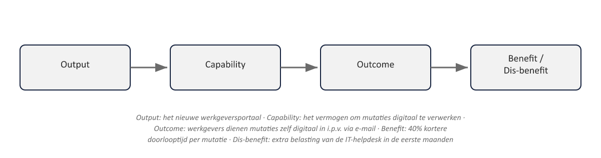
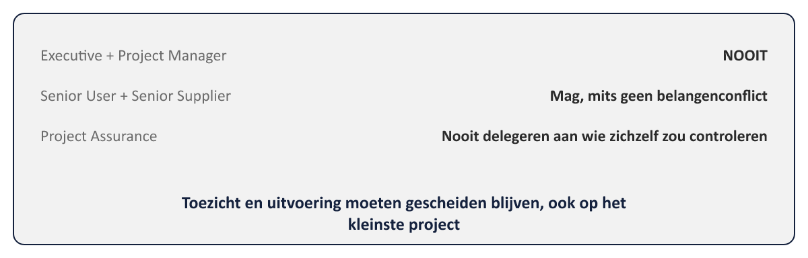

Sheet 1Titel
Project- en Programmamanagement
Niveau 1 · Deel 3: Business Case en Organizing
Sheet 2Van principe naar practice
- Principes: waarom (niet tailorbaar)
- Practices: hoe (wel tailorbaar, functie blijft)
- Vandaag: Business Case (principe 1) en Organizing (principe 3)
Sheet 3Business Case: doel
Mechanisme om doorlopend te toetsen: wenselijk, haalbaar, uitvoerbaar
Antwoord op bevinding 1
Sheet 4De waardeketen
Output → Capability → Outcome → Benefit / Dis-benefit

Sheet 5Output vs. outcome: de vuistregel
- Kun je het aanraken/aanwijzen? → output
- Beschrijft het een verandering in gedrag/situatie? → outcome
- Dis-benefit ≠ risico: vrijwel zeker, niet onzeker
Sheet 6Business-opties
- Niets doen
- Het minimum doen
- Iets doen
Bij compliance: soms afgezet tegen consequenties van niet-handelen
Sheet 7Het ontwikkelpad
| Processtap | Status van de business case |
|---|---|
| Starting up a project | Outline business case — grove inschatting, onderdeel van de project brief |
| Initiating a project | Detailed business case — volledig uitgewerkt, onderdeel van het PID |
| Elke faseovergang / managing a stage boundary | Updated business case — herijkt tegen de actuele situatie |
| Closing a project | Verified business case — getoetst of de voorspelde baten aannemelijk (nog) haalbaar zijn |
- Starting up → outline
- Initiating → detailed
- Elke faseovergang → updated
- Closing → verified
Sheet 8Investeringsanalyse
- Whole life cost
- Return on investment
- Terugverdientijd
- Discounted cash flow / netto contante waarde
Sheet 9Rollen bij de business case
Executive: bezit de business case
Project Manager: stelt op en onderhoudt namens de Executive
Sheet 10Organizing: drie belangen
- Business → Executive
- Gebruiker → Senior User
- Leverancier → Senior Supplier
Sheet 11Zeven rollen
| Niveau | Rol(len) |
|---|---|
| Corporate/programma | Buiten de projectorganisatie — geeft het projectmandaat af, stelt projectbrede toleranties |
| Directing (stuurgroep) | Executive · Senior User · Senior Supplier |
| Managing | Project Manager |
| Delivering | Team Manager |
| Ondersteunend (niet aan één niveau gebonden) | Project Assurance · Project Support |
Executive · Senior User · Senior Supplier · Project Manager · Team Manager · Project Assurance · Project Support
(teruggebracht van negen naar zeven in de 7e editie)
Sheet 12Vier niveaus
Corporate/programma → Directing (stuurgroep) → Managing (projectmanager) → Delivering (teammanager)
Sheet 13Combineren: wat mag
- Senior User + Senior Supplier: kan, mits geen belangenconflict
- Project Support + Team Manager: kan bij kleine projecten
- Change Authority: optioneel, vaak gedelegeerd
Sheet 14Combineren: de harde regel
Executive + Project Manager: NOOIT
Project Assurance: nooit gedelegeerd aan wie het zelf controleert

Sheet 15Terug naar bevinding 2
Rollen benoemen ≠ een projectorganisatie inrichten die kan sturen
WGP 2.0: titels wel, mandaat niet
Sheet 16Meridiaan: eerste schets
- Executive: directielid digitaliseringsstrategie
- Senior User: hoofd Klantcontact
- Senior Supplier: IT-directeur / leverancier
Komt terug in deel 10 (capstone)
Sheet 17Vooruitblik
Deel 4: Plans — van Focus on products naar een productgerichte planning